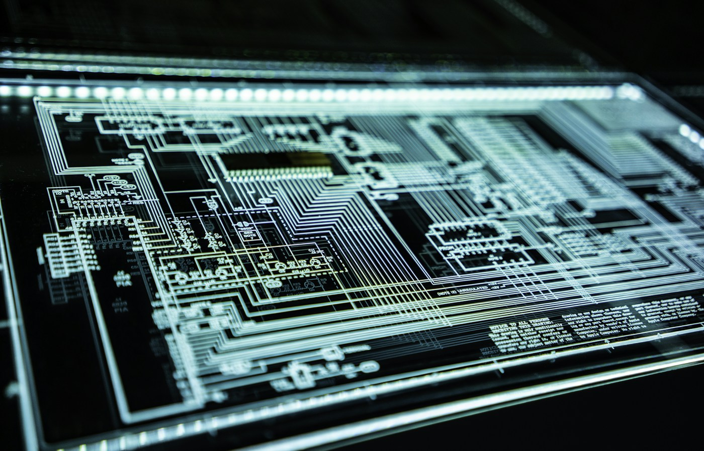
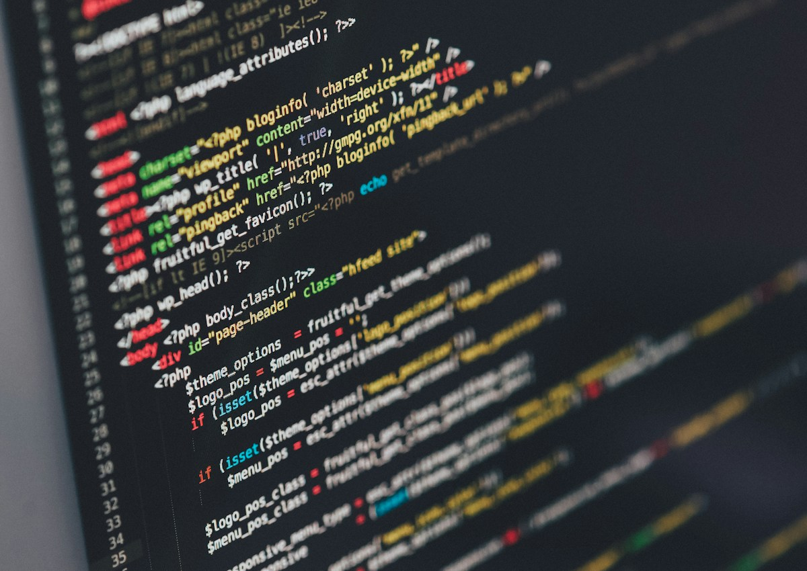

AI-control room
Control room-сцена для технологичного проекта: dashboard-экраны, AI-мониторинг, command center, тёмный визуальный язык и ощущение контроля.
Главное ощущение — система всё видит и держит под контролем
Control room-визуал должен не просто показывать экраны. Он должен создавать ощущение центра управления: данные поступают, система анализирует, команда видит риски, решения принимаются быстрее.

Dashboard-слой: графики, сигналы и аналитика создают ощущение живой системы мониторинга.
Tech-среда усиливает доверие: продукт ощущается частью сложной инфраструктуры.
Тёмный tech-стиль работает на ощущение контроля
Для control room-сцен хорошо работают тёмные фоны, акцентный свет, контрастные интерфейсы, глубина пространства и холодная технологичная палитра. Это помогает создать ощущение серьёзной системы.

Immersive digital layer: помогает показать, что система работает с большим объёмом данных.
Инфраструктурный фон добавляет ощущение мощности и технической базы.
Сцена подходит для разных tech-продуктов
Control room можно адаптировать под AI-аналитику, кибербезопасность, промышленный мониторинг, логистику, финтех, умные города или системы операционного контроля.
В видео такая сцена раскрывается через движение данных
Для ролика control room может оживать через включение экранов, появление alert-сигналов, смену dashboard-слоёв, движение камеры и финальный переход к продукту или логотипу.
Tech-визуал с ощущением управления
Итог — control room-сцена, которую можно использовать в ролике, на лендинге, в презентации или как ключевой образ AI-продукта.
Что входит в сцену
Visual direction, dashboard-логика, AI-layer, референсы, AI-кадры, motion-сценарий и рекомендации по использованию.